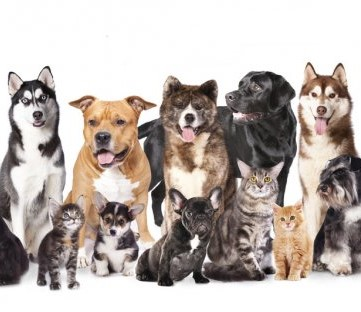
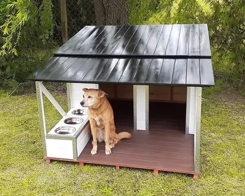
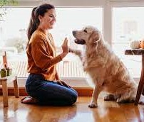
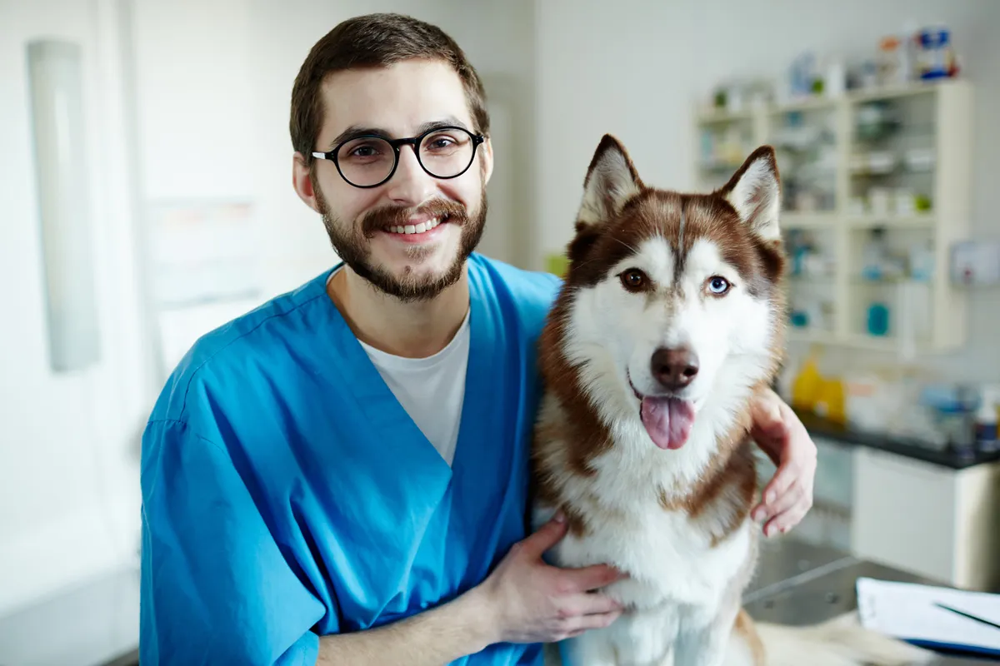
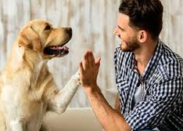
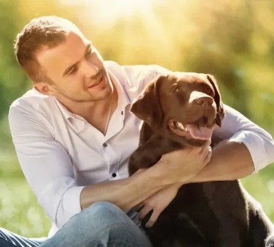

Mascotas en Viaje nació a fines del 2010 ante la preocupación de un grupo de personas que se juntaban en la
plaza con sus mascotas. Ante el conocimiento del aumento de animales encontrados en la vía pública iniciamos
esta organización, con el fin de luchar con esta problemática. A los cuatro iniciantes de este proyecto se
nos fueron sumando voluntarios, profesionales veterinarios o simplemente con mucho corazón, quien hoy hace
posible llevar esta tarea adelante.

NUESTA MISION
“El sueño de la cucha propia”, es nuestro lema para promocionar la adopción y tenencia responsable de
mascotas. Buscamos favorecer el encuentro de los perros rescatados de la calle (que se encuentran en los
caniles), con sus futuras familias. Así los interesados podrán acercarse, conocerlos e interactuar con
ellos.
La idea es acompañar el momento de la adopción y guiar a los interesados para buscar lo que mejor se adapte a
ambas partes; ya que la adopción tiene que ser de las dos partes, cada uno con sus características y
necesidades. La condición es que sea adopción responsable y que la casa sea segura y cerrada, sin acceso a
la vía pública. Queremos que todos tengan su casa, su hogar y que cumplan el sueño de la cucha propia.

NUESTRO EQUIPO

Laura Sanchez
Coordinadora
Licenciada Sociologa. Cordinadora y Organizadora de eventos.

Mauro Cuesta
Organizador
Medico Cirujano, integrante de Medicos sin frontes. Atencion de animales rescatados.

Eduardo Medina
Veterinario
Especialista en animales exoticos. Médico de planta de animales no tradicionales.

Tomas Rodriguez
Administrador
Administrador de Empresas. Mantenimiento de instalaciones y compras.